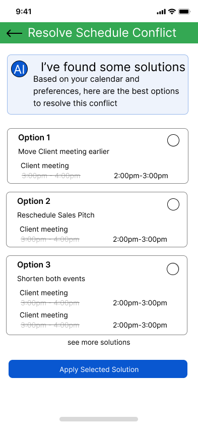

.png)
The Problem
Business owners face challenges managing their schedules efficiently, often juggling multiple appointments and platforms, which leads to wasted time and added stress. While digital tools help with organization, the lack of integration and constant need for adjustments make scheduling frustrating and inefficient.
"I spend more time managing my calendar than actually working on my business."
Hours spent weekly on scheduling management
Different platforms typically used for scheduling
Of business owners report scheduling conflicts monthly
Research & Discovery
Methodology
- 4 in-depth interviews with stakeholders
- Competitive analysis of scheduling tools
- User journey mapping
- Pain point identification
Key Findings
- Platform fragmentation causes significant friction
- Manual rescheduling is time-consuming and error-prone
- Professionals develop complex workarounds for scheduling
- Cognitive load of maintaining awareness across systems creates stress
Personas
Kristin Watson
The Time-Strapped Agency Owner
Kristin represents the overwhelmed small business owner whose growth is stunted by administrative overhead. She manages a team of employees and freelancers, creating complex scheduling needs.
Wade Warren
The Growth-Focused Business Owner
Wade owns a coffee shop in Capetown. He embodies the ambitious entrepreneur who views scheduling not as an end in itself but as infrastructure that should support his business vision.
Competitive Analysis
Calendly
Strengths: User-friendly interface, excellent for team scheduling
Weaknesses: Limited features in free plan, lacks robust conflict management
Microsoft Outlook
Strengths: Deep integration within Microsoft ecosystem
Weaknesses: Complex interface, limited cross-platform flexibility
Fantastical
Strengths: Elegant interface, natural language input
Weaknesses: Lacks team-oriented features crucial for businesses
I'll create a Google Calendar event, then manually send Zoom links through email, then duplicate important client meetings in our Salesforce system. It's redundant and I'm constantly worried something will fall through the cracks.
Design Process
UX Flows
Flow 1: Basic Scheduling with Sync

This flow begins at the home calendar view, which serves as the central hub. From here, users can create different types of schedules (personal, team, client) and configure sync options with external platforms.
Flow 2: Conflict Resolution

This flow starts from the same home view but introduces a conflict detection alert that provides an immediate entry point when scheduling issues arise. The flow splits into manual and AI-assisted resolution paths.
UI Sketches
After developing our UX flows, we translated our conceptual frameworks into visual designs through detailed UI sketches. This process helped us evaluate different interface approaches and identify potential usability issues before moving to wireframes.


Creating multiple sketches revealed the importance of consistency across different features. While designing both flows, we maintained similar header styles and navigation elements to ensure a cohesive experience throughout the system.
Insights from Sketching
The UI sketches directly mapped to our UX flows but provided deeper insights into user interaction points. For example, in the conflict resolution flow, what began as a simple concept evolved into three detailed screens showing calendar view, time selection, and resolution options. This detailed visualization helped identify potential friction points and necessary features that weren't immediately obvious in the flow diagram.
Visual Hierarchy Focus
A key aspect we focused on during sketching was creating clear visual hierarchy. For critical elements like conflict detection alerts, we needed to ensure they stood out without being alarming. The AI-assisted path required careful consideration of how to display complex information in an accessible way.
The sketching phase was crucial for building a bridge between our conceptual flows and the low-fidelity wireframes that followed. It allowed us to rapidly iterate on multiple design approaches and address potential issues early in the process.
Key Design Considerations
Clear Information Architecture
Ensuring users could easily understand scheduling conflicts and their resolution options
Intuitive Navigation
Creating consistent patterns for moving between screens and accessing features
Appropriate Feedback
Designing visual cues and confirmations for user actions
Progressive Disclosure
Revealing complex options only when needed to reduce cognitive load
Some considerations for future iterations included more detailed error states and edge cases, as well as additional accessibility considerations. However, these sketches provided a solid foundation for developing our low-fidelity prototypes in the next phase.
From Flows to Wireframes
Prototype 1: Better Organization with Sync
Focused on integrating personal, business, and client schedules into a single interface with a global sync feature to connect with external platforms in one step.
Prototype 2: Conflict Resolution
Explored a structured system for managing overlapping appointments with both manual resolution and AI-assisted options to maintain user control while providing intelligent assistance.
Design Principles
User Control with AI Assistance
Provide intelligent suggestions while ensuring users maintain decision-making power
Unified Experience
Create a central hub that connects disparate platforms and reduces context switching
Visual Clarity
Present complex scheduling information in an easily digestible format
Efficiency First
Optimize for time-saving at every step of the scheduling workflow
User Testing
This is exactly what I've been looking for. I need something that thinks ahead for me. If I'm juggling 15 client meetings and one needs to move, I don't want to spend an hour figuring out the domino effect.
Testing Methodology
We conducted testing sessions with two key stakeholders:
- Erik, owner of a consulting company
- Marcus, a fitness coach who manages client sessions
Both participants were given specific tasks to complete with our prototypes while we observed their interactions and gathered feedback.
Key Insights
- Prototype preference: Both participants strongly preferred Prototype B (Conflict Resolution) for its cleaner interface and straightforward navigation
- AI trust with options: Initially skeptical about AI, users became enthusiastic when offered multiple suggestions to choose from
- Visual confirmation: Users wanted to see how changes would affect their schedule before committing
- Edge cases: Unexpected need for inviting participants to personal events was identified
I don't want just one recommendation from the AI. Show me a few options and let me pick what works best for my situation. Sometimes the technically 'optimal' solution isn't the one that makes the most sense for my relationship with that client.
Decision Point
Based on user testing, we decided to proceed with Prototype B (Conflict Resolution) as our primary direction, while incorporating several key enhancement requests:
- Multiple AI-suggested solutions with visual previews
- Group calendar consideration for scheduling
- Batch conflict resolution capability
- Invitation options for personal events
Design Iterations
Dashboard Enhancement
Before

Original dashboard contained all the right elements but lacked quick search functionality and had a cluttered visual hierarchy.
After
.png)
Added prominent search function and refined visual hierarchy to make important information stand out clearly.
Conflict Resolution Clarity
Before

Conflict visualization was not immediately obvious about what the problem was or how serious it was.
After

Implemented clearer information hierarchy, color-coding for events, and highlighted the precise period of overlap.
AI Solution Preview
Before
Text descriptions of scheduling changes didn't provide enough context about the impact of each solution.
After

Added dynamic preview that shows exactly how the calendar would appear after applying each AI-suggested solution.
Now I can see what the AI is thinking, and it makes sense. I feel comfortable making these decisions.
Final Solution
Unified Dashboard
Centralized view with powerful search functionality for quick access to events, people, and projects
Global Integration
Seamless connection with popular platforms like Google Calendar, Outlook, Zoom, and Slack
AI Resolution
Multiple AI-generated suggestions for scheduling conflicts with visual calendar previews
Team Awareness
Composite availability view across team members for easier group scheduling
Batch Processing
Apply the same resolution method to multiple conflicts simultaneously
Mobile Accessibility
Full functionality across desktop and mobile devices for on-the-go scheduling
Lessons Learned
Balance AI with Human Control
Users are open to AI assistance but still want final decision-making power. The most successful approach was providing multiple AI suggestions rather than a single automated solution.
Visualization is Key
The ability to preview changes before committing to them dramatically increased user confidence. Visual communication proved more effective than text descriptions, especially for complex scheduling changes.
Cross-Platform Integration
The value of our solution lies not just in its features but in its ability to connect disparate systems. Users prioritized integration with existing tools over entirely new functionality.